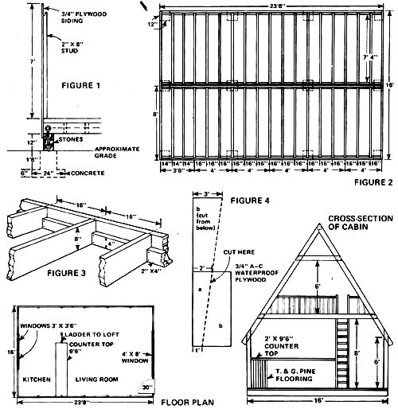

Here it is: an attractive, super-low-cost (yet extremely durable) "wilderness cabin" that [1] meets all U.S. Forest Service building requirements, [2] sleeps five people comfortably, and [3] can - as Lester E. Harris Jr., demonstrates above - be erected in less than a week!
Six years ago, when I took on the job of operating a biological station in the Allegheny Mountains of Highland County, Virginia, I found myself faced with a serious problem: namely, how to house my family during the summer school sessions.
The small private college I worked for had no funds for extra staff lodging ... and our year-round home was in the far eastern part of the state (which meant we couldn't commute to the outpost). What we needed, then, was an "overnight" cabin that the five of us-my wife, myself, our two teenage sons, and our teenage daughter-could build quickly, easily, and inexpensively right on the biological station grounds, and live in during the summer months.
In terms of design, such a lodge would have to be [1] weathertight, [2] sturdy enough to both withstand the gusty storms common to this area and shed the loads of snow that occasionally build up here, and [3] spacious enough inside to give the six-footers in the family (my sons and me) more than just the tiny amount of stand-up room down the center of the building we knew we'd get if we built a conventional A-frame cabin.
I'm pleased to report that we were able to solve our housing problem-and meet our design objectives-quite nicely with the aid of a 16' X 24 ' "modified Aframe" cabin (see accompanying photos) ... one that we built in just five daylight-to-dark workdays at a cost of only $1,000. (Those are 1971 dollars. Today, the same dwelling would cost about $1,800 to build as indicated in the following bill of materials.)
We spent our first workday digging the twelve 2'- square, 2'-deep holes for the foundation's footings, pouring six inches of concrete (made partly with gravel from a nearby stream) into each hole, and gathering stones for the piers.
First thing the next morning, we began to lay up a dozen 12"-square concrete-and-stone piers to a height-above grade-of about a foot. (See Fig. 1.) While the mortar was still wet, we inserted a long bolt (the threaded end of which previously had been heated and bent at a right angle) head-down into each of the ten outer piers ... then-with the aid of a borrowed dumpy level-I evened up all the columns.
When the concrete had begun to harden, we [1] set the 2" X 8" stringers atop their supports, [2] marked the spots at which the bent bolt tips met the beams, [3] drilled holes in the beams at these points, and (finally) [4] bolted the stringers into place atop the piers.
Our next task was to nail two-by-fours along the insides of the four longest stringers (see Fig. 2) ... after which we notched our 2" X 8" X 7'8" joists at both ends so they could ride on the two-by-fours ( see Fig. 3), and spiked them down at a spacing (center-to-center) of 16". (Note: To ensure a roof overhang of at least 4" at the building's rear, we spaced the last four pairs of joists 14 " apart ... as shown in Fig. 2.)
A top the completed beamwork grid we nailed a subfloor consisting of boards we'd salvaged from an old shed ... and directly over the subfloor we built a finish floor of 3/4" A-C waterproof plywood (the same kind of plywood we'd later use for siding and roofing). Since we were using such heavy flooring material, we saw no need to place tar paper between the layers of wood to act as a moisture barrier.
Next, we constructed the entire rear wall of the cabin-plywood siding and all-flat on our newly constructed floor, using 3/4" X 4-1/2 " carriage bolts (with flat AND lock washers beneath the nuts) to connect the rafters and studs. Then we raised the wall as high as we could by hand, pulled it into final upright position with the aid of a rope tied to a pickup truck, and checked the structure very carefully for "plumb" (to ensure that successive rafter/ stud frames would be properly aligned) before nailing it to the floor.
With the rear wall up and standing, we proceeded to [1] bolt together the first of five rafter/ stud frames, [2] raise it upright, [3] spike the structure to the floor, and [4] connect it to the wall with sheets of plywood siding (which eliminated the need for further bracing of any kind).
We repeated the above procedure for each of the next four rafter/stud frames, using additional plywood siding to brace the structure as we went along. (Note: We applied the sheets of plywood rough side out and spiked them in place first with 16-penny common nails, then with 8-penny commons.) By overlapping the lowermost siding panels with-and nailing them to-the 2" X 8" stringers surrounding the building, we ended up with one heck of a solidly constructed, well-anchored basic framework.
On the fourth day, we [1] built the cabin's front wall on the ground (and raised it into place with lots of sweat and push), [2] nailed ridge boards and purlins to the rafters, and [3] hammered down the plywood roofing, using a combination of 16-penny and 8-penny common nails, as we had done with the siding. (You're right if you think those 3/4"-thick sheets of plywood were awfully heavy to work with ... but they go into place astonishingly fast and easy if every thing's lined up properly.)
Also, we framed and built the front roof overhang, which employs two sheets of plywood cut as shown in Fig. 4.
On the fifth day we set the windows, hung the doors, shingled the roof, painted the entire building with redwood-colored preservative, and put in the loft floor and loft railing. Our cabin in the woods was UP!
Of course, we later made certain additions to the basic cabin: such as a 16' X 16' rear deck ... a 6'-wide front porch ... a handmade fieldstone chimney for our wood-burning stove (which took us the better part of a year to complete) ... and 1-1/2"-wide lat tice strip battens on the outside walls, to cover the gaps between the sheets of plywood and improve the dwelling's outward appearance.
I might add that since the cabin was built we've also put in a loft window containing an exhaust fan, and a back door (since we found the tiny lodge a bit "close" on hot summer days).
One addition we never did make was that of a bathroom. (We use the Biological Station's washhouse facility, which happens also to be our source of water.) Likewise, since we planned to eat our meals in the camp dining hall, we elected not to install a kitchen. The one thing our cabin does have, though, is lots of sleeping space ... which is all we really wanted in the first place.
The fact that we decided not to install a bath, insulation, and other "necessities" in our cabin doesn't mean-of course-that you can't, should you decide (as a number of folks have) to build a replica of our modified A-frame lodge. The beauty of this design, in fact, is the ease with which it can be altered to suit individual tastes and needs. (Even the cabin's dimensions-except for the width, which was tailored to make the most efficient use of 4' X 8' sheets of plywood-can be changed relatively easily.)
Another thing I like about our modified A-frame "summer home" is its inherent durability. Unlike other, much less expensive log dwellings, this cabin-once completed and stained-can be forgotten for at least ten years as far as upkeep is concerned.
In short then, we love our $1,000 modified A-frame. We think that for ease of construction, durability, and sheer good looks, it can't be beat!
|
 LESTER E. HARRIS JR. UPPER PHOTO : The Harris family A-frame sheds snow well and is said to be comfortable in zero-degree weather, despite lack of insulation. Heat is provided by a single wood-burning stove. LOWER PHOTOS: Unlike other A-frames, the Harris's lodge features ample stand-up, walk-around mom inside and-thanks to the loftsleeps five comfortably. Twin collar beams near roof's apex add strength to building, provide point from which to suspend lighting fixture (not visible). |
LESTER E. HARRIS JR. |
|